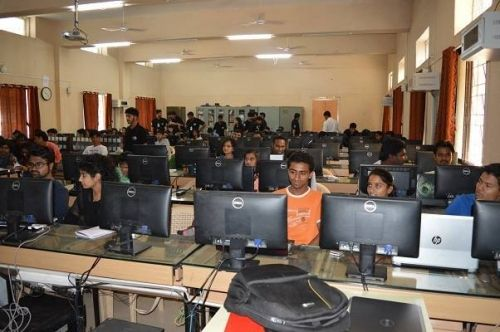
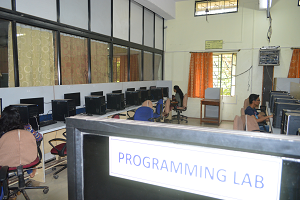

Department Information
The Department of Computer Science and Engineering - Walchand College of Engineering, Sangli was established in 1986. The department has contributed in producing several eminent engineers who are in key positions of the Government organizations, public sector and Multinational companies and haveught in significant contributions in various regions of India. Alumni of the department can be found in all public and private sector organizations operating in diverse fields, holding senior key positions in the organizations.
The Department offers a four-year course leading to the Bachelor's Degree in Computer Science and Engineering (B. Tech.) and a two-year course leading to Master's degree (M. Tech.) in Computer Science and Engineering. The curriculum contains mandatory as well as elective courses and has various tracks and a choice based credit system with balanced theory, laboratory and project oriented courses. The track system provides the students; the flexibility to choose the elective courses based on the aptitude, interests and career plan of students. Courses and course contents are designed by taking inputs from Industry Consultation Committee (ICC). This makes the curriculum of these programmes dynamic, in-line with the current trends of the Computer and IT Industries. These programmes attract meritorious students every year at the entry level for both UG and PG programmes.
Department also provides research guidance to Ph.D. students of Shivaji University, Kolhapur. Running of Ph.D. programme in the CSE department has boosted the research culture further. Department is a recognised research centre of Shivaji university of Kolhapur and Admissions are under NDF, ADF schemes and also minor centre for QIP research scheme.
Students of the department are engaged in various co-curricular and extra-curricular activities. They proactively participate in different prestigious competitions and have also won various national level coding competitions such as Hackathons. The Placement of UG students for the past three years has been consistently above 85%.
The Department is known for its reputed faculty having expertise in diverse fields. The faculty has contributed research papers in various Journals and Conferences. It has built up a wide research potential in Computer Science and Engineering. The department has well equipped engineering laboratories in the field of Deep Learning, Image Processing and Computer Vision, IoT, Artificial Intelligence and Machine Learning. Apart from the Central computing facility the department has its own computing facility and continuous internet access.
Department Images
 Contact Details
- Director e-mail : director@walchandsangli.ac.in
- Deputy Director e-mail : deputy.director@walchandsangli.ac.in
- HoD e-mail : hod.cse@walchandsangli.ac.in